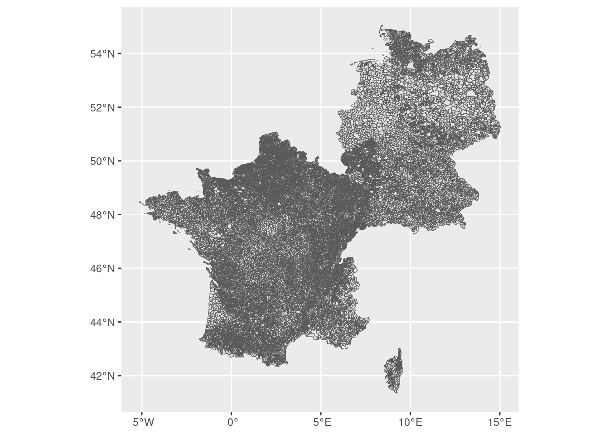
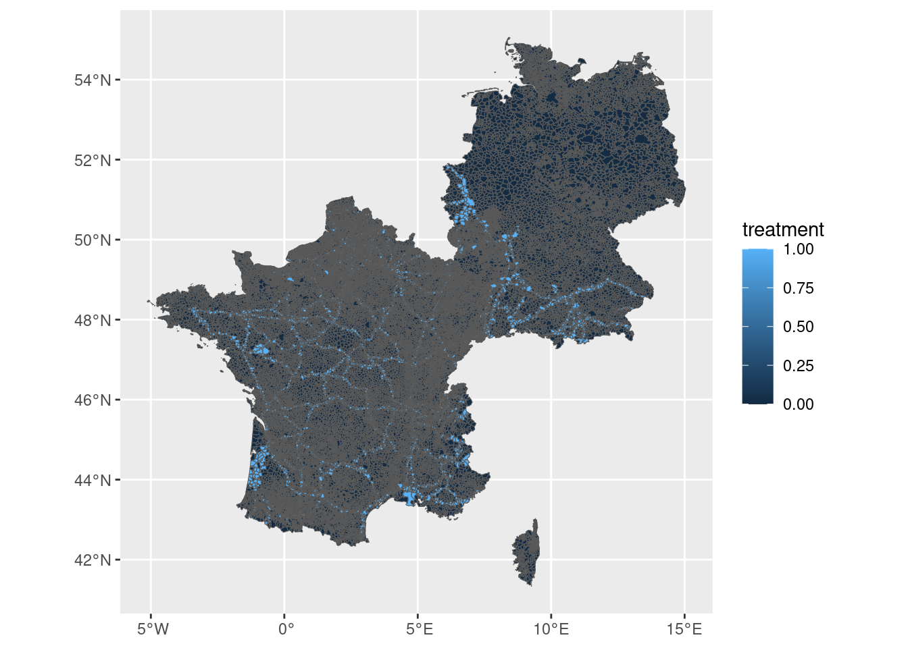

6The Effect of Historical Treatment on Population Density: France-Germany Border Region
6.1 Introduction
This notebook analyses the relationship between a historical treatment variable and present-day population density in the France-Germany border region. The dataset contains LAU-level regions straddling the French-German border, with a binary indicator (treatment) marking which regions received a Roman road, the historical treatment of interest.
To isolate the effect of the treatment from confounding regional characteristics, we estimate a series of OLS regressions with increasingly granular fixed effects at the NUTS-2 and NUTS-3 level. Fixed effects absorb any time-invariant differences between regions at those levels, so the treatment coefficient reflects variation within those groupings. The NUTS-2/3 identifiers are not part of the LAU dataset, so we retrieve them from Eurostat via the giscoR package and assign them to each LAU through a spatial join.
We will:
Load and map the spatial data.
Filter to regions with a valid treatment assignment.
Fetch NUTS-2 and NUTS-3 boundaries from giscoR and spatially join them to the LAU data.
Estimate three regression models with progressively stricter fixed effects.
Display the results in a publication-style table.
6.2 Step 1: Load packages and data
library(sf)
Linking to GEOS 3.10.2, GDAL 3.4.1, PROJ 8.2.1; sf_use_s2() is TRUE
── Conflicts ────────────────────────────────────────── tidyverse_conflicts() ──
✖ dplyr::filter() masks stats::filter()
✖ dplyr::lag() masks stats::lag()
ℹ Use the conflicted package (<http://conflicted.r-lib.org/>) to force all conflicts to become errors
library(giscoR)
We read in the France-Germany shapefile. Each row is a LAU region with spatial geometry, a treatment indicator (treatment), and population density (POP_DENS_2016).
Reading layer `france_germany_updated' from data source
`/home/bas/Documents/git/aerc/notebooks/france_germany_updated.geojson'
using driver `GeoJSON'
Simple feature collection with 49018 features and 23 fields
Geometry type: MULTIPOLYGON
Dimension: XY
Bounding box: xmin: -5.140199 ymin: 41.33386 xmax: 15.03986 ymax: 55.05812
Geodetic CRS: WGS 84
A quick map to get a sense of the geography:
fr_gr |>ggplot() +geom_sf()

6.3 Step 2: Filter to regions with a treatment assignment
Some regions have NA for treatment — these are regions where treatment status is unknown or not applicable (e.g. regions far from the border). We drop them so that all three models are estimated on the same sample.
data <- fr_gr |>filter(!is.na(treatment))data |>ggplot(aes(fill = treatment)) +geom_sf()

6.4 Step 3: Attach NUTS-2 and NUTS-3 identifiers via giscoR
The LAU data does not contain NUTS-2/3 codes. We fetch the NUTS-3 boundaries for France and Germany from Eurostat (year 2016, to match the population data) using giscoR, then use a spatial join to assign each LAU to its parent NUTS-3 region. Since NUTS-3 codes embed the NUTS-2 code as a prefix (e.g. NUTS-3 FR101 → NUTS-2 FR10), we can derive the NUTS-2 identifier with a simple substring operation.
sf::sf_use_s2(FALSE)
Spherical geometry (s2) switched off
nuts3 <- giscoR::gisco_get_nuts(year ="2016",nuts_level =3,country =c("FR", "DE"),resolution ="03") |>select(nuts_3 = NUTS_ID)# Make sure CRS matches before joiningnuts3 <-st_transform(nuts3, st_crs(data))data <- data |>st_join(nuts3, largest=TRUE) |>mutate(nuts_2 =substr(nuts_3, 1, 4))
although coordinates are longitude/latitude, st_intersection assumes that they
are planar
Warning: attribute variables are assumed to be spatially constant throughout
all geometries
A quick check: how many LAU regions received a NUTS-3 assignment?
cat("Regions with NUTS-3 assigned:", sum(!is.na(data$nuts_3)), "\n")
We use fixest::feols(), which is a fast OLS estimator that supports high-dimensional fixed effects.
Model 1 — a simple bivariate regression: does treatment predict population density?
Model 2 — adds NUTS-2 fixed effects. This controls for broad regional differences (e.g. between Alsace and Baden-Württemberg), so we compare treated and untreated regions within the same NUTS-2 area.
Model 3 — adds both NUTS-2 and NUTS-3 fixed effects. This is the most restrictive specification, absorbing even finer regional variation.
The fixed effects are specified after the | in the formula.
library(fixest)m1 <- fixest::feols(POP_DENS_2016 ~ treatment, data = data)
NOTE: 511 observations removed because of NA values (LHS: 511).
m2 <- fixest::feols(POP_DENS_2016 ~ treatment | nuts_2, data = data)
NOTES: 513 observations removed because of NA values (LHS: 511, Fixed-effects: 2).
2 fixed-effect singletons were removed (2 observations).
NOTES: 513 observations removed because of NA values (LHS: 511, Fixed-effects: 2).
2/107 fixed-effect singletons were removed (107 observations).
6.6 Step 5: Display results in a regression table
modelsummary() puts all three models side by side. stars = TRUE adds the conventional significance stars (, , ). The table makes it easy to see how the treatment coefficient changes as we add more controls.